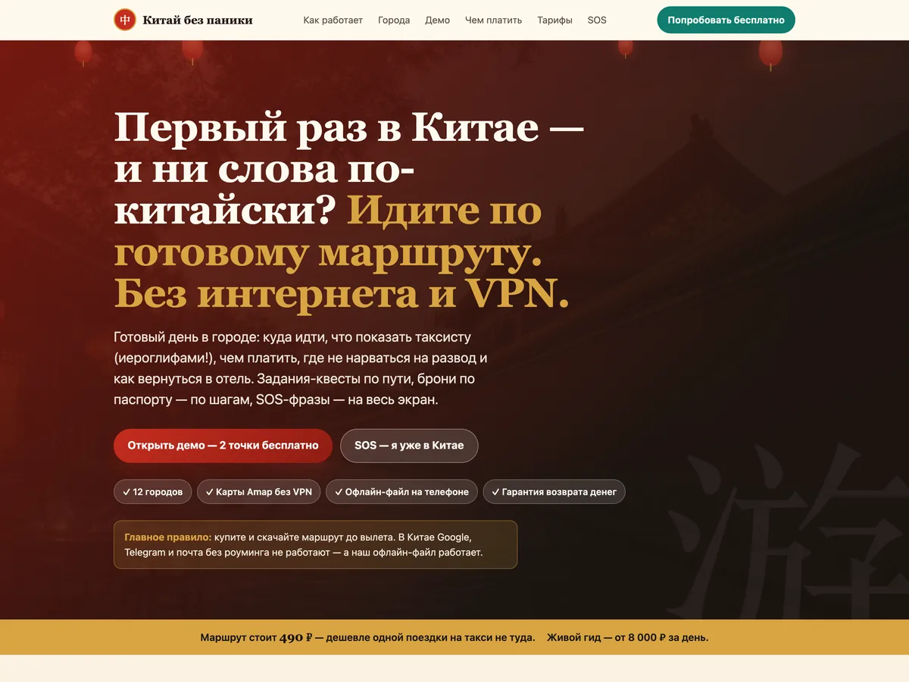
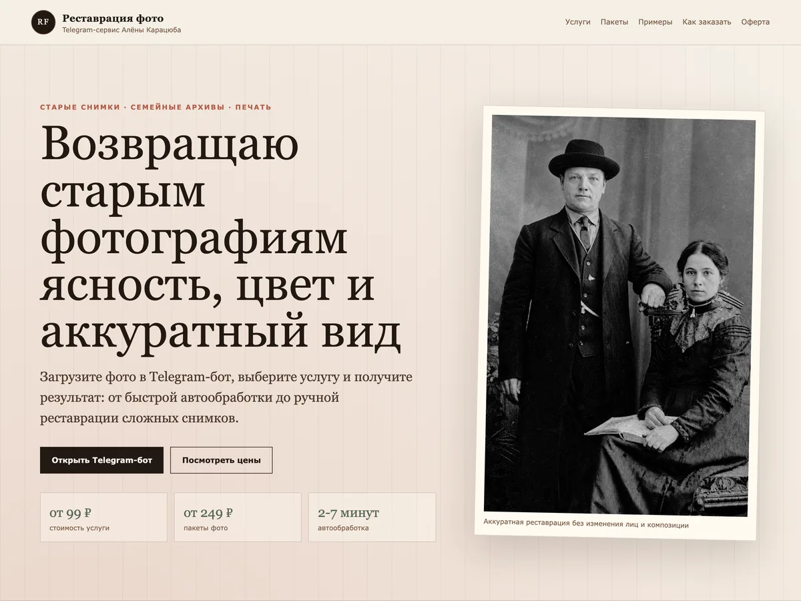
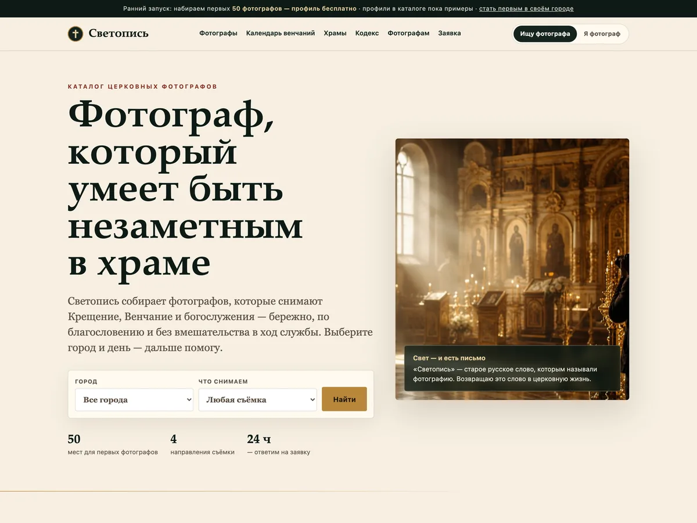
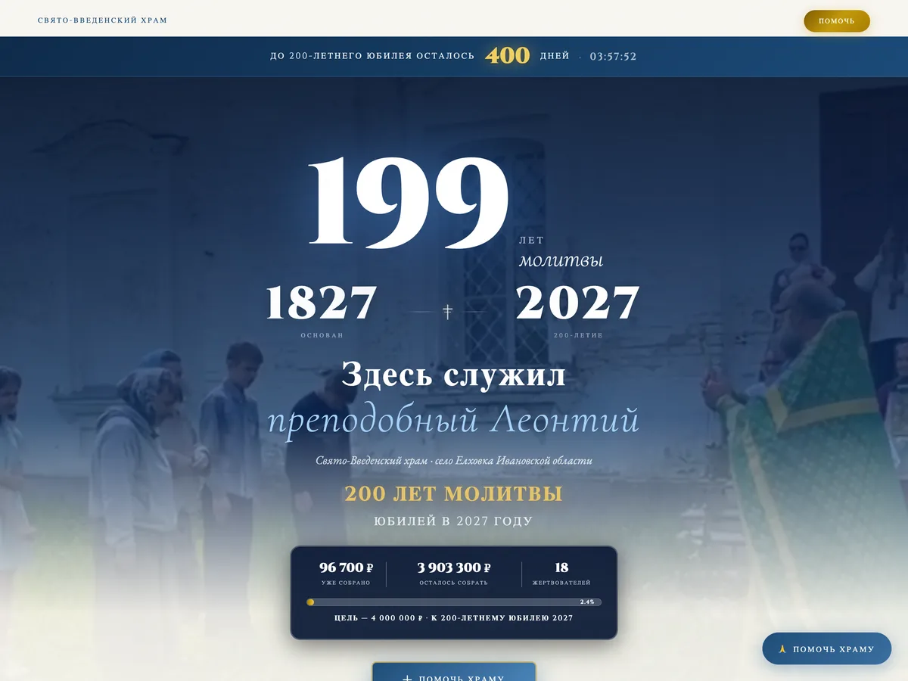
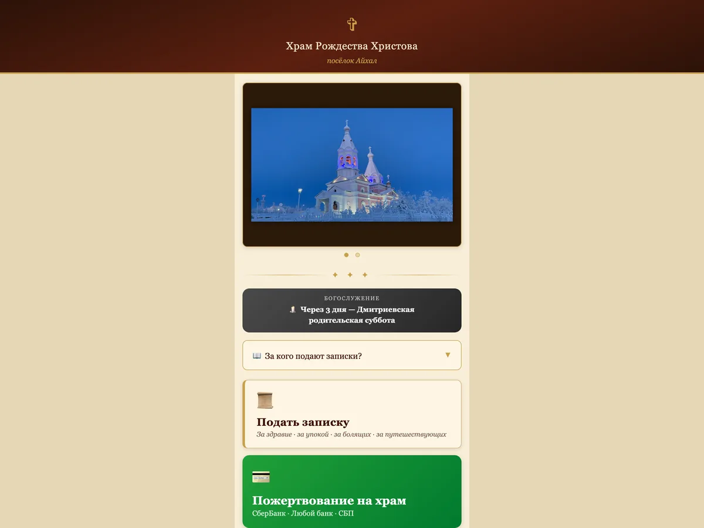
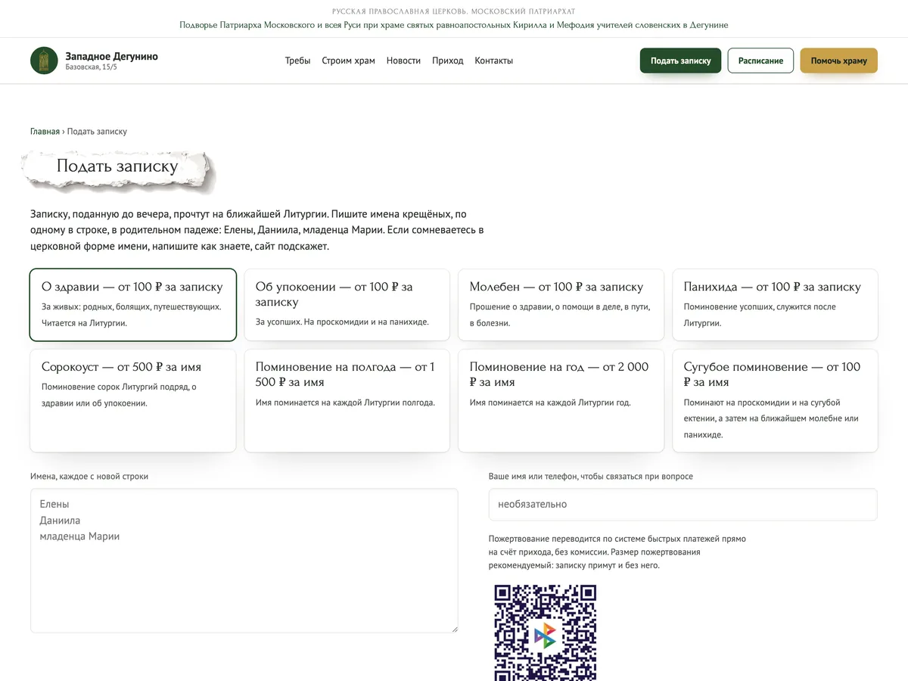
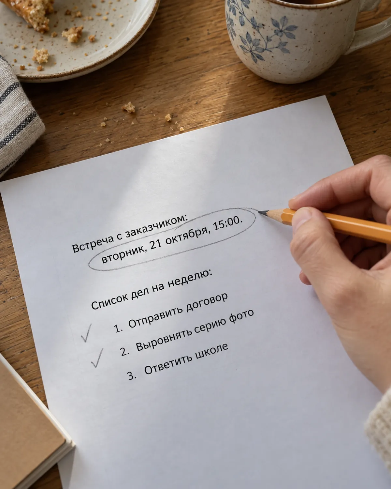

Рутину делает помощник. Вы делаете своё дело.
Разрабатываю персональных ИИ‑помощников и авторские сайты. Вот как проходит день моего собственного.
Обсудить помощника Разборы: как сделать понятную презентациюКопии уходят на сервер, хранятся четырнадцать последних. Об этом никто не думает.
Читает каналы за ночь, оставляет три-пять новостей по делу, остальное отсеивает.
Из задачника и календаря. Читается за минуту, день начинается с фокуса.
Письма от людей пересказывает в двух строках. Рассылки молчит.
Настоятель пишет в своём канале MAX, через десять минут пост стоит в Telegram и ВК. Канал прихода, открыть.
И так каждые два часа. В чат попадает только то, за что стоит браться.
Спрашивает, что нужно, называет цену по прайсу, показывает черновик. Оплата после черновика.
Вместе с документами, которые понадобятся, чтобы утром не искать.
Ничего не теряется. Утром хвосты видны первыми.
Раз в неделю, воскресным вечером. Короткий список вместо угрызений.
Настоящее расписание моего помощника, по вашим часам. Проверить: канал прихода.
Листайте день: утро выше, вечер ниже.
Что он снимает с вас
«Отвечаю одно и то же по десять раз»
Отвечает клиентам по вашим правилам. Спорное отдаёт вам.
Здравствуйте, а на пятницу есть окно? переслано от клиентки
Ответил по вашим правилам: есть 15:00 и 17:30, попросил выбрать. Спорное оставлю вам.
11:42Черновик письма в администрацию готов, одна страница. Правки?
21:10Второй абзац короче.
21:14Готово. Отправить?
21:14«Вечер уходит на бумаги»
Письма, отчёты и сметы к утру черновиком. Вы правите и отправляете.
«Нейросеть отвечает, только когда спросишь»
Помощник помнит вас, делает по расписанию и сам пишет, когда готово.
Выжимка за ночь: 3 новости по вашей теме, 1 требует ответа. Открыть?
08:00Напоминаю: завтра 10:00 звонок с поставщиком. Договор и счёт приложил.
договор-2026.pdf · счёт-14.pdf18:00«Забываю, что обещала»
Ведёт список поручений и напоминает заранее, с документами.
«Не разбираюсь в технике»
Живёт в привычном чате: Telegram или MAX. Кнопки вместо команд.
В MAX новый заказ: презентация к защите, 12 слайдов. Смету отправил, ждём «да».
Открыть диалогОтветить самой15:03Запомни: клиентам пишем на «вы» и без смайликов.
16:20Записал в правила. Так и буду отвечать.
16:20«А если вы пропадёте?»
Код, ключи и памятка ваши. Подписку на нейросеть оформляем на вас, так что помощник не зависит от меня.
Как идёт дело
Разговор. Полчаса о том,
что съедает время.
Без анкет. Я спрашиваю, вы рассказываете, я записываю.
Что съедает время
- Ответы клиентам в мессенджерах1,5 часа в день
- Счета, письма, сметычас по вечерам
- Расписание в трёх местахпутается
- Напоминания себена бумажках
- Посты в группураз в месяц, с чувством вины
Итого около трёх часов в день. Пример листа с разговора.
Показ. Макет и цена
до начала работы.
Показываю, как будет выглядеть, называю цену и срок. Берусь только после вашего «да».
Что сделает помощник
- Ответы клиентамотвечает по вашим правилам, спорное отдаёт вам
- Счета, письма, сметычерновики к утру, вы правите
- Расписаниеодно, напоминает заранее
- Напоминаниясам, с документами
- Посты в группуготовит, вы одобряете
Цену и срок называю на показеНачинаем после вашего «да»
Запуск и рядом. Памятка
и 30 дней на связи.
Памятка человеческим языком. Поправить, дописать, объяснить ещё раз: я рядом.
Первая задача работает: ответил двум клиентам, обе записались.
сделанодень 1Памятка.pdf
6 страниц, человеческим языкомдень 1Если что непонятно, пишите, разберём. Я на связи 30 дней.
АлёнаЧерновик поста о скидке на ноябрь готов. Одобрить?
ОдобритьПоправитьдень 3Запомнил: клиентам «вы» с маленькой буквы, без смайликов.
день 5Что съедает время
- Ответы клиентам в мессенджерах1,5 часа в день
- Счета, письма, сметычас по вечерам
- Расписание в трёх местахпутается
- Напоминания себена бумажках
- Посты в группураз в месяц, с чувством вины
Итого около трёх часов в день. Пример листа с разговора.
Что сделает помощник
- Ответы клиентамотвечает по вашим правилам, спорное отдаёт вам
- Счета, письма, сметычерновики к утру, вы правите
- Расписаниеодно, напоминает заранее
- Напоминаниясам, с документами
- Посты в группуготовит, вы одобряете
Цену и срок называю на показеНачинаем после вашего «да»
Первая задача работает: ответил двум клиентам, обе записались.
сделанодень 1Памятка.pdf
6 страниц, человеческим языкомдень 1Если что непонятно, пишите, разберём. Я на связи 30 дней.
АлёнаЧерновик поста о скидке на ноябрь готов. Одобрить?
ОдобритьПоправитьдень 3Запомнил: клиентам «вы» с маленькой буквы, без смайликов.
день 5Начнём с разговора
Полчаса, без анкет. Расскажете, что съедает время, а я покажу, что возьмёт на себя помощник.
Обсудить помощникаАвторские сайты
Сайт отдаю целиком: домен, файлы и пароли ваши.
- Китай без паникипутеводитель и маршрутыkitay-bez-paniki.ru

- Реставрация фотостарые снимки, заказ в ботеsvetopis.art/demo

- Светописьплатформа церковных фотографовsvetopis.art

- Храм в Елховкесайт и сбор пожертвованийhram-elhovka.ru

- Записки онлайн, Айхалзаписка в храм с телефонаkhram-aikhal.github.io

- Записки Дегунинозаписки и сводка к службеhram-km-degunino.ru

Разовые работы к сроку
- Презентация к выступлению, защите, уроку1–2 дня
- Памятка или буклет на одну страницу1 день
- Афиша и программа события1 день
- Грамоты и дипломы по списку1 день
- Документ до 10 страниц: положение, инструкция, письмо1–2 дня
- Расшифровка записи и конспектв день обращения
- Заявка на грант или субсидиюпо сроку положения
Смету считает мой помощник в MAX за пару минут. Сначала черновик, оплата после.
Посчитать в MAX РазборыКак сделать презентацию понятнойБыло и стало на настоящих работах, бесплатные шаблоны PowerPoint и чек‑листы.Кто это делает
По диплому я инженер, по жизни фотограф. Помощника сначала построила себе, и он работает у меня каждый день. Теперь делаю таких же для других.

Её работа реально освобождает время для настоящей живой деятельности: общения с людьми и молитвы.
Для прихода в Дегунино сделаны расписание, которое само уходит в группу, записки с телефона и сводка к службе на почту храма.
Храмам и приходам: отдельная страница с работами, ценами и отзывами настоятелей
- Telegram
- @alenaprasol
- Телефон
- +7 913 921-36-50
- Почта
- joyka08@mail.ru
- Помощник в MAX
- svod.svetopis.art/agent
- В телефон
- Сохранить контакт